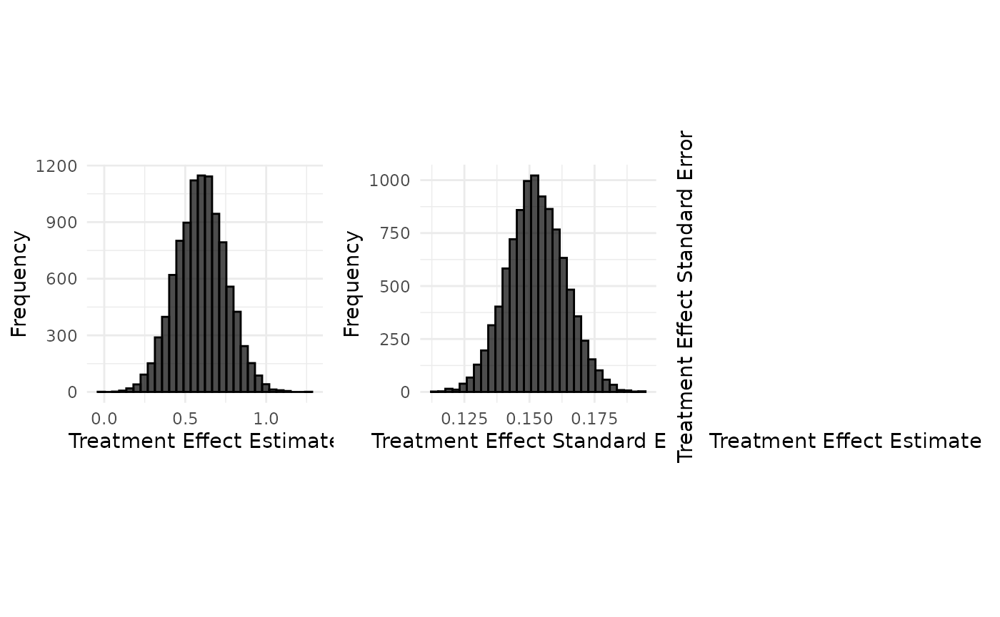
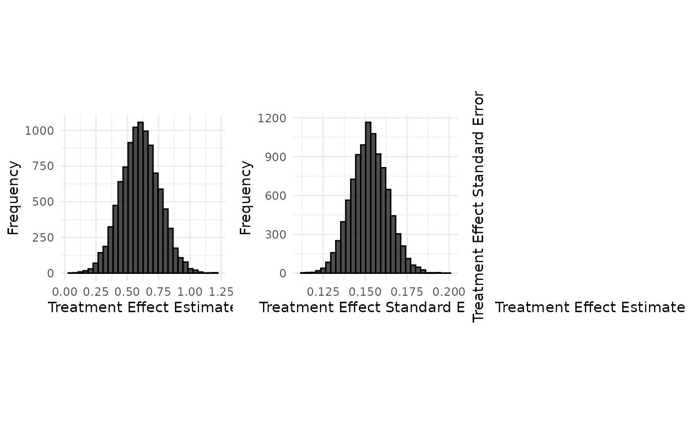

Data Generation : Botox case study (continuous endpoint)
Tristan Fauvel, Quinten Health
2026-09-11
Source:vignettes/data_generation/Data_generation_botox.Rmd
Data_generation_botox.Rmd
set.seed(42)
case_study_config <- yaml::yaml.load_file(system.file("conf/case_studies/botox.yml", package = "RBExT"))
format_case_study_config(case_study_config)| Parameter | Value |
|---|---|
| General | |
| Name | Botox |
| Control | Placebo |
| Summary Measure Likelihood | normal |
| Theta 0 | 0 |
| Endpoint | continuous |
| Null Space | left |
| Sampling Approximation | FALSE |
| Target | |
| Control | 130 |
| Treatment | 126 |
| Total | 256 |
| Treatment Effect | 0.1 |
| Standard Error | 0.1 |
| Source | |
| Control | 235 |
| Treatment | 233 |
| Total | 468 |
| Treatment Effect | 0.2 |
| Standard Error | 0.1 |
Generation of aggregate data
source_data <- SourceData$new(case_study_config)
drift <- 0.4
target_sample_size_per_arm <- 100
target_data <- TargetDataFactory$new()
target_data <- target_data$create(source_data = source_data, case_study_config = case_study_config, target_sample_size_per_arm = target_sample_size_per_arm, treatment_drift = drift, summary_measure_likelihood = source_data$summary_measure_likelihood)
n_replicates <- 10000
data <- target_data$generate(n_replicates = n_replicates)
print(data[1:10,])## treatment_effect_estimate treatment_effect_standard_error
## 1 0.8097144 0.1648389
## 2 0.5136186 0.1501266
## 3 0.6555475 0.1506688
## 4 0.6968085 0.1599049
## 5 0.6618406 0.1345548
## 6 0.5837662 0.1598121
## 7 0.8312163 0.1689636
## 8 0.5855201 0.1607539
## 9 0.9087566 0.1455753
## 10 0.5904067 0.1382090
## sample_size_per_arm standard_deviation
## 1 100 1.648389
## 2 100 1.501266
## 3 100 1.506688
## 4 100 1.599049
## 5 100 1.345548
## 6 100 1.598121
## 7 100 1.689636
## 8 100 1.607539
## 9 100 1.455753
## 10 100 1.382090
target_data$plot_sample(data)
### Implementation details
read_function_code(sample_aggregate_normal_data)## sample_aggregate_normal_data <- function (mean, variance, n_replicates, n_samples_per_arm)
## {
## sample_mean <- rnorm(n_replicates, mean = mean, sd = sqrt(variance/n_samples_per_arm))
## if (n_samples_per_arm > 1) {
## degrees_of_freedom <- n_samples_per_arm - 1
## sample_variance <- variance * rchisq(n_replicates, df = degrees_of_freedom)/degrees_of_freedom
## }
## else {
## sample_variance <- rep(NA_real_, n_replicates)
## }
## sample_standard_error <- sqrt(sample_variance/n_samples_per_arm)
## samples <- data.frame(treatment_effect_estimate = sample_mean,
## treatment_effect_standard_error = sample_standard_error,
## sample_size_per_arm = n_samples_per_arm, standard_deviation = sqrt(sample_variance))
## return(samples)
## }
samples <- sample_aggregate_normal_data(
mean = target_data$treatment_effect,
variance = target_data$standard_deviation^2,
n_replicates = n_replicates,
n_samples_per_arm = target_data$sample_size_per_arm
)
target_data$plot_sample(samples)